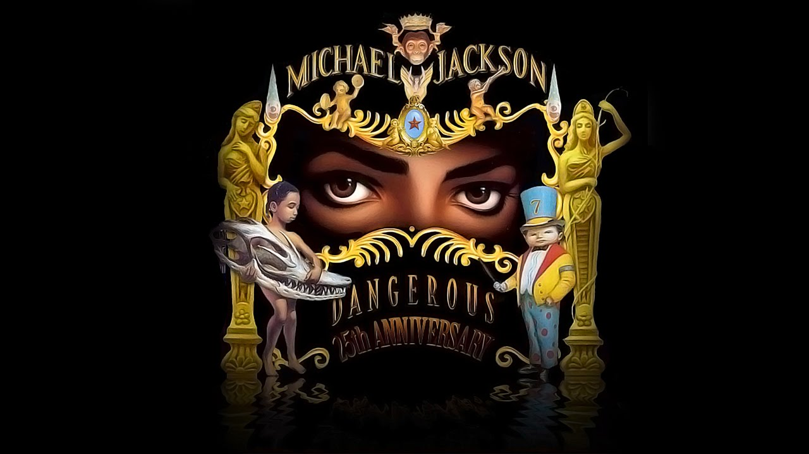

Dangerous Fundația Heal the World
În martie 1991, Jackson a reînnoit contractul cu Sony Music pentru 65 de milioane de dolari, o sumă-record la acea vreme, surclasându-l astfel pe Neil Diamond ce și-a prelungit contractul cu Columbia Records. A lansat cel de-al optulea album (Dangerous) în același an. Până în 2008, materialul discografic s-a comercializat în peste șapte milioane de exemplare în Statele Unite și în peste 12 milioane la nivel mondial; este cel mai bine vândut album în stilul new jack swing al tuturor timpurilor. În țara sa natală, primul single a beneficiat de cel mai mare succes comercial. „Black or White” a ajuns pe primul loc în Billboard Hot 100, staționând pe această poziție timp de șapte săptămâni. Piesa a avut clasări similare și în restul lumii. Al doilea cântec promovat, „Remember the Time”, a urcat până pe locul trei în clasamentul american, fiind prezent în primele cinci poziții timp de opt ediții. Jackson a interpretat acest cântec la gala de decernare a premiilor Soul Train Awards într-un scaun, declarând că a suferit o rană în timpul repețiilor. „Heal the World” a reprezentat cel mai mare șlagăr al materialului discografic în Regatul Unit, înregistrând vânzări de peste 450 000 de exemplare și clasându-se timp de cinci săptămâni pe locul secund în UK Singles Chart în 1992.
Jackson a înfințat fundația Heal the World în 1992. Fundația organiza numeroase acțiuni de caritate, copii săraci erau aduși în parcul de distracție construit de Jackson la Neverland, pentru a se bucura de nenumăratele distracții oferite de parc. Fundația a trimis deasemenea milioane de dolari în întreaga lume, pentru a ajuta copiii afectați de război și boli. Turneul mondial, Dangerous World Tour, a început în 27 iunie 1992 și s-a terminat în 11 noiembrie 1993. Jackson a susținut 67 de concerte, în fața a 3,5 milioane de oameni. Toate profiturile au fost donate către fundația Heal the World. Drepturile de difuzare a turneului Dangerous au fost cumpărate de HBO pentru suma de 20 de milioane de dolari, record care nu a fost doborât nici astăzi. Odată cu moartea lui Ryan White, Jackson a atras atenția publicului asupra virusului HIV/SIDA, un subiect controversat în acea perioadă. El a pledat public pentru acordarea de extra-fonduri, pentru cercetarea și combaterea virusului HIV/SIDA.
În timpul unei călătorii în Africa, Jackson a vizitat mai multe țări, printre care Gabon și Egipt. La prima oprire în Gabon a fost întâmpinat de 100.000 de oameni, unii dintre ei purtând pancarte pe care scria „Bun venit acasa, Michael”. La prima lui vizită în Coasta de Azur, Jackson a fost încoronat "Regele Sani" de către un șef tribal.
Printre cele mai aclamate prestații ale lui Michael se numără și spectacolul Super Bowl XXVII. Unul dintre cele mai spectaculoase momente a fost catapultarea lui Jackson pe scenă dintr-o ploaie de artificii. Purtând o costumație militară, negru cu auriu, și ochelari de soare, Jackson a aterizat pe scena, rămănând nemișcat timp de câteva minute în fața mulțimii extaziate. După aceasta și-a scos încet ochelarii, i-a aruncat și a început să cânte și să danseze. Spectacolul a fost compus din 4 melodii: „Jam”, „Billie Jean”, „Black or White” si „Heal the World”. Show-ul de la Super Bowl a fost urmărit de 135 de milioane de americani. Albumul Dangerous a urcat 90 de poziți în top. Jackson a primit premiul "Living Legend Award" la cea de-a 35-ea Gală a Premiilor Grammy, din Los Angeles. „Black or White” a fost nominalizat pentru cea mai bună prestație vocală. „Jam” a câștigat două nominalizări: cea mai bună prestație vocală R&B și cea mai bună melodie R&B.
